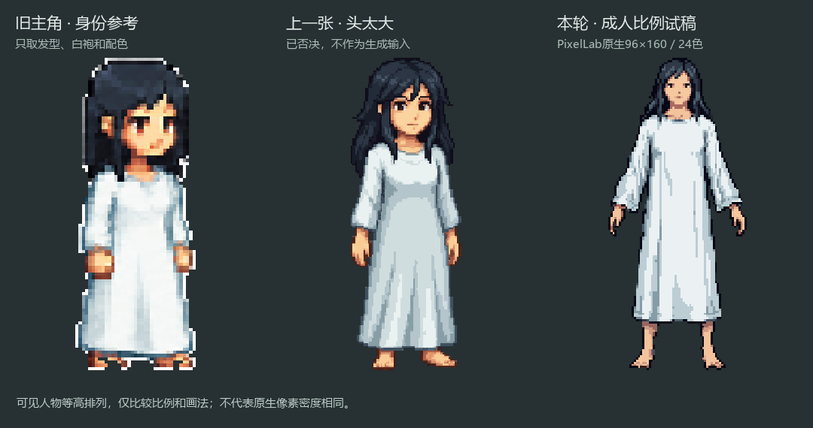
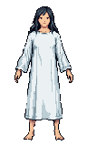
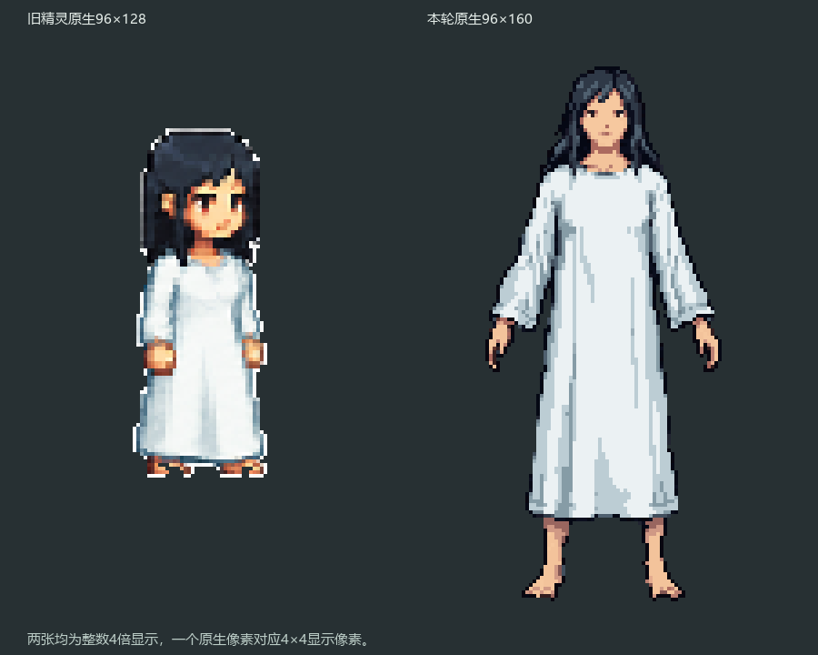
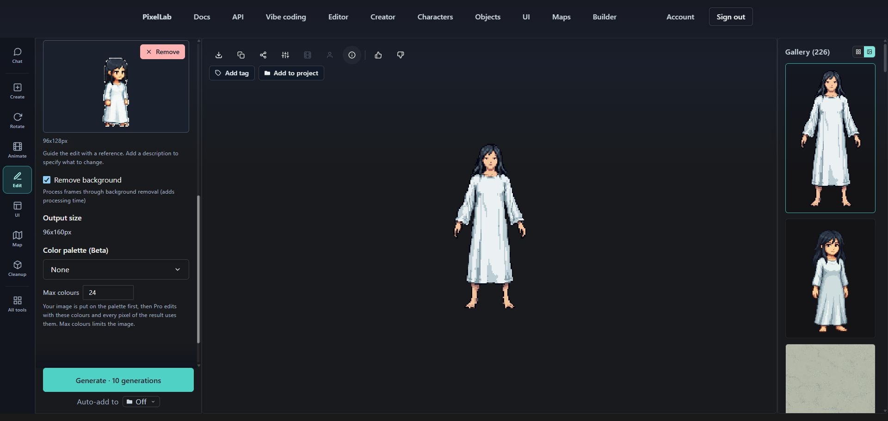

2026-11-17。按用户选定的《武士零》《SIGNALIS》成人比例与像素概括方向，保留旧主角发型和白袍。没有上传第三方作品图像。
制作说明 · 原生PNG · Aseprite母版 · 来源／实扣



独立试稿：96×160、24色、二值透明。像素主体由PixelLab Pro绘制，没有本地重画。该画布不是未来角色3D贴图密度规格。
两张输入分工：成人比例导图控制头身、肩颈、四肢；旧精灵只作发型和服装身份参考。上一张大头稿不作为输入。用户外观审查、侧背面、3D和动画均未完成。
